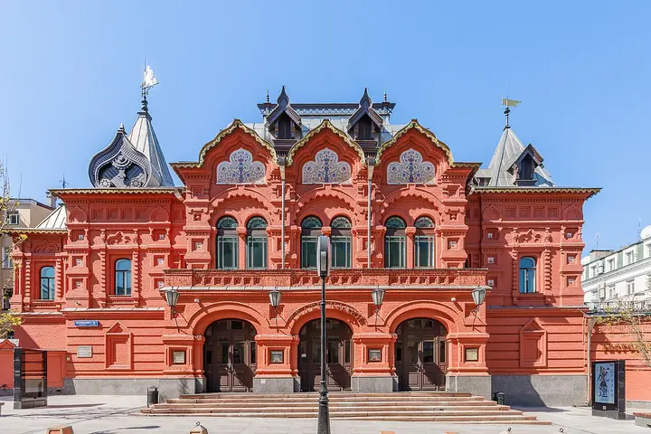

Подборку собрали 21 октября, прошедшие события скрыты. Свежая афиша — на главной

Фото: Mike1979 Russia, CC BY-SA 3.0 · Wikimedia Commons
Театр · ЦАО
Театр Наций
Театр Евгения Миронова в здании бывшего театра Корша 1885 года: громкие постановки с большими звёздами в главных ролях — билеты ловите заранее.
- ₽₽₽ · дороже 3 000 ₽ на человека
- Новое в каталоге
- в 1 плане
- 3 события в афише
Позвать сюда: Театр НацийОткрыть в каталоге: Театр НацийМаршрут до места: Театр Наций
Адрес и детали
- Адрес
- Петровский пер., 3
Открыть на Яндекс Картах (в новой вкладке) - Метро
- м. Чеховская
- Округ
- Центр (ЦАО)
- Цена
- дороже 3 000 ₽ на человека
- Телефон
- +7 (495) 629-37-39
- Проверено
- работает — проверили в октябре 2026
Планы с этим местом 1
- Театр Наций · Театр · м. Чеховская
- 7 минут пешкомMendeleev · Музыкальный бар
Громкая постановка в Театре Наций в здании театра Корша, а потом Mendeleev в кирпичных сводах бывшей типографии: в будни джаз и соул, в выходные DJ до 4 утра.
Открыть план: Театр Наций и бар в старой типографииПозвать сюда: Театр Наций и бар в старой типографии
Фото: Mike1979 Russia, CC BY-SA 3.0 · Wikimedia Commons

Афиша площадки 3
Театр Наций, Основная сцена · м. Чеховская · 18+
Главная премьера осени: Шолохов глазами китайского мастера Моу Сэня и режиссёра Мурата Абулкатинова. Пять часов с двумя антрактами, начало в 18:00.
Подробнее: Тихий ДонПозвать сюда: Тихий ДонБилеты : Тихий Дон (страница с билетами, откроется в новой вкладке)
Фото: Mike1979 Russia, CC BY-SA 3.0 · Wikimedia Commons
Театр Наций, Основная сцена · м. Чеховская · 18+
Горьковская купчиха в тексте Константина Стешика: за семейным праздником прячутся боль и одиночество. Вассу играет Юлия Пересильд; идёт 1 ч 45 мин, антракта нет.
Подробнее: ВассаПозвать сюда: ВассаБилеты : Васса (страница с билетами, откроется в новой вкладке)
Фото: Mike1979 Russia, CC BY-SA 3.0 · Wikimedia Commons
Театр Наций, Новое пространство · м. Чеховская · 12+
Часовая премьера Александра Шумилина на музыку Антона Светличного, где вместо сюжета — эмоции. В каждый из дней два показа: в 18:00 и 20:00.
Подробнее: Новая опера переживаний «Жизнь»Позвать сюда: Новая опера переживаний «Жизнь»Билеты : Новая опера переживаний «Жизнь» (страница с билетами, откроется в новой вкладке)
Фото: Mike1979 Russia, CC BY-SA 3.0 · Wikimedia Commons
Похожие рядом


Что ещё рядом

Как позвать
- Выбери план, место или событие — в карточке адрес, цены и маршрут в Яндекс Картах.
- Нажми «Позвать сюда» — соберётся приглашение-игра для свидания или голосование для компании.
- Отправь ссылку в любой мессенджер: тебе ответят, а компания отметит, куда и когда может. Бесплатно и без регистрации.